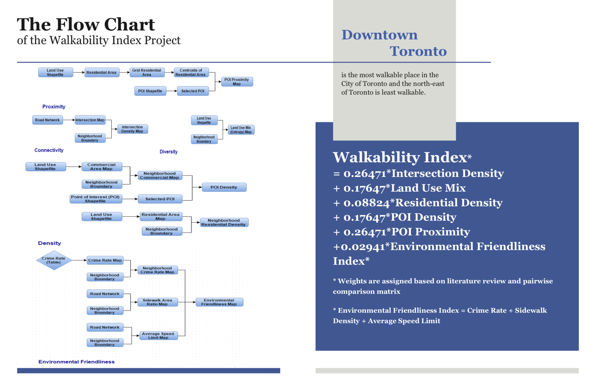
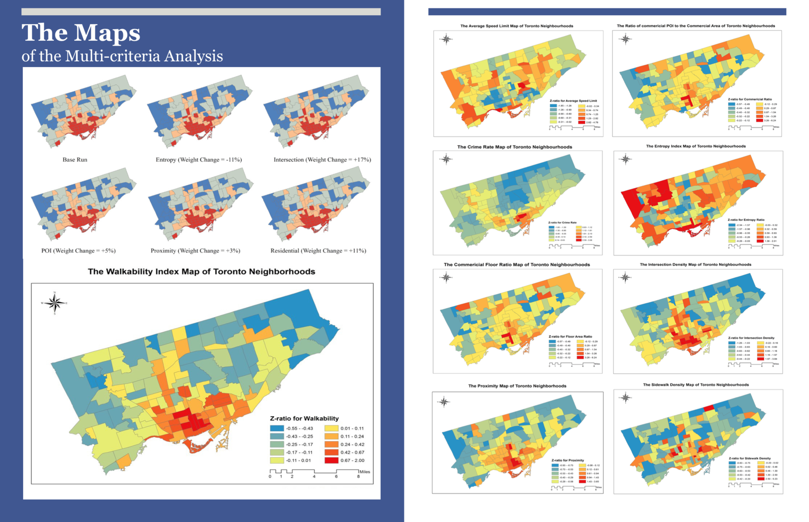

The objective of this research was to examine the association between neighborhood walkability and diabetes prevalence rate in Toronto, Canada through GIS and regression technique. Six factors, namely residential density, intersection density, proximity level, entropy index, environmental friendliness and POI density, were used to define the walkability of each neighborhood. The weights of each factor was decided based on the previous studies and evaluated through sensitivity analysis. The neighborhoods located in the downtown area of the Toronto city tends to have higher walkability than the edge ones.
Poisson Regression was employed to analyze the impact of walkability on the diabetes prevalence rate. In total, seven regression models (one general and six stratified) were derived. According to the models, under the condition that the age class is 45-64, a significant and negative association between walkability and diabetes prevalence rate was discovered. A unit increase in walkability can result in twenty to thirty percent decrease in diabetes prevalence rate. However, when it comes to other age classes, there is no significant association between walkability and diabetes prevalence.
